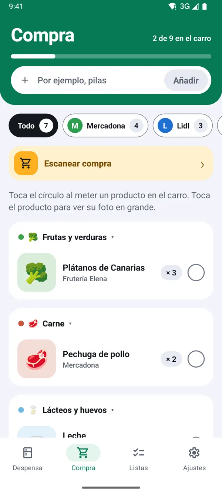
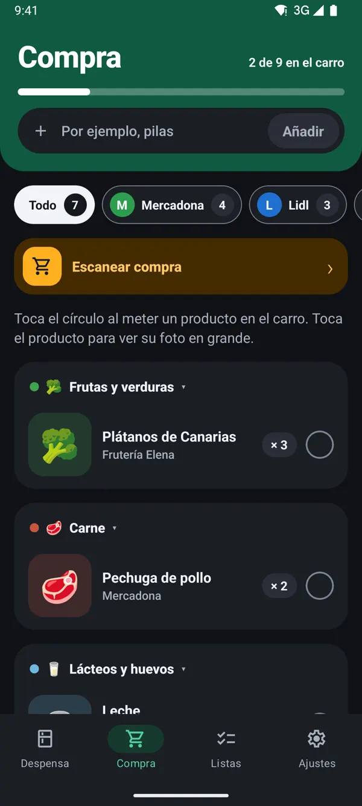

Cómo reponer la despensa con una foto del ticket
Actualizado el 13 de noviembre de 2026
Vuelves del súper y no te apetece escanear producto a producto. Con TuDespensa Pro haces una foto al ticket y la app repone la despensa de golpe. Puedes probarlo gratis con 2 tickets.
1Abre Compra y pulsa el botón del ticket
En la pestaña Compra verás el botón 🧾 Reponer con un ticket. Si todavía no tienes Pro, aparece como Probar con un ticket mientras te queden tickets gratis.
Truco: Pro lo paga una persona y lo usa toda la casa: cualquier móvil de la casa puede escanear tickets.


2Haz la foto o elige el PDF
- Hacer foto al ticket de papel, entero, plano y con buena luz.
- Ticket en PDF si tu súper te da el ticket digital.
La app lo lee dos veces y comprueba que las líneas suman el total. Suele tardar menos de un minuto.
Escanear un ticket
Haz una foto del ticket entero, plano y con buena luz, o elige el PDF del ticket digital.
Tickets gratis para probar Pro: 2
3Revisa lo que ha leído
Verás cada línea del ticket emparejada con un producto de tu despensa y las unidades que se suman.
- Toca una línea para cambiar el producto o las unidades. La app lo recuerda para el próximo ticket.
- Si duda entre dos productos, te lo pregunta: «¿Es…?».
- Lo que no tenías aparece como Nuevo y se crea al reponer.
4Pulsa «Reponer»
Cuando todo esté bien, pulsa Reponer 6 productos (el número cambia con tu ticket). Verás «Despensa repuesta» y el stock de cada producto ya estará sumado.
Truco: si la IA no consigue leer el ticket, no te gasta ninguno. Prueba con otra foto, con el ticket entero y bien iluminado.
TuDespensa es gratis y sin anuncios.
Llegará primero a Android y, más adelante, a iPhone. Las capturas son de la app con una casa de ejemplo.